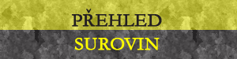

Ekonomika
Suroviny
Jihonorgathské (Mlhavské) hory jsou proslulé svımi vzácnımi i vysoceodolnımi rudami jako je Vorkurit nebo Talnachit.
Zásadním mezníkem je však odlišná (ni�ší) cena ghornského ménì kvalitního inuru. Kováøi z hraïištì si ji�
nìkolikrát nechali pøivézt ghornskı inur a z nìj také nìco vyrobili.
Jak moc je nekvalitní, popøípadì nestabilní?

Pravidelné události
Ka�dé ráno jedenáctou hodinu poledního èasu vyrá�í všichni lovci Harg Torsid do okolních lesù, nebo� v tuto dobu vylézá lovná zvìø ze svıch doupat a pøemís�uje se.
Pravidelnì ka�dı den kolem ètvrté odpolední dorá�í do hraïištì obchodní karavana putující z Ghornu.
Vybírání daòí probíhá na konci ka�dého mìsíce. O vıbìr se stará pøevá�nì Arlenova garda. Hlavní úøedník Harg Torsidu má na starost vyèíslení a sèet daòí a sepsání daòového pergamenu, kterı musí bıt následnì podepsán Arlenem.
Dovoz, vıvoz a zakázky
Kvùli neschopnosti bıvalıch obchodnickıch a øemeslnickıch mistrù se zbo�í na skladech hromadí a vìtšina kupcù se bojí kamkoli vydat. Menšina buï bohatne, nebo umírá. S úpadkem obchodu se pojí úpadek øemesla, tradièní vırobci vysoce kvalitního zbo�í nemají odbyt a situaci øeší rùznì – neèinností, pøeorientováním se na zbo�í, které se dá prodat v místì, pøesunem, úplnou zmìnou práce a �ivota, …
Ta hmotnìjší èást ekonomického cirku Harg Torsid je visibilnì uschována ve velkém sklaïišti, které má na starost Arlenùv osobní úøedník, má od nìj samozøejmì klíè. Ještì nikdy se �ádní lapkové nepokoušeli vykrást Arlenovo sklaïištì. Nenacházejí se v nìm toti� �ádné velké poklady ani zlaté bohatství. Jde spíš jen o velké mno�ství potravin, stavebních surovin a nejspíš i drahıch kovù.
Vzhledem k lokalitì, ve které se nacházíme, je zde èasto nadnášen problém nadbytku produktù ve skladech a jejich minimální odbyt. Obchodní prospekce èásteènì pomáha a ulehèuje místnímu sklaïišti, nebo� dohazuje a zaøizuje i zakázky z Ghornu a Západní Mlhavy, kde nejsou zvyklí na tak nízké ceny, jako v Norgathu.
Zámìstnání
Zamìstnání a nìjakı ten vıdìlek je mo�né získat u samotného Arlena, sekundárnì u jeho úøedníka, je� sídlí v radnici.
Mnohdy je nejjednodušší nechat se naverbovat do zbranì. Obchodní prospektor Demiurg Dolvich vypisuje na
nástìnku pøed radnicí volné pozice, kterımi znaènì pomáha ji� tak zchudlému obyvatelstvu.
Tato doba není pøíliš pøíznivá a ka�dá mince je vesnièanùm drahá jako jejich vlastní �ivot.
Majitel hraïištì Arlen Torsid hledá zájemce, kterı se bude staratpøevá�nì o manipulaci se
surovinami ve sklaïišti. Po�adovány jsou znalosti seèítání, udèítání, èitaníe a uva�ování.
A dále je potøeba sehnat: ...
- údr�báø staré studnì s porouchanım mechanizmem
- èistiè latrın a stok
- Arlenovo slu�ebnictvo (lovec, døevorubec, popravèí...)
- èistiè latrın a stok